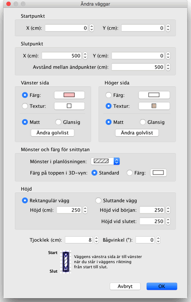

|
|
�ndra v�ggar | ||
|
Du kan �ndra position och l�ngd p� hemmets v�ggar endera genom att anv�nda musen eller
med menyn Planl�sning > �ndra v�ggar.... N�r en v�gg �r vald i planl�sningen kan du �ven flytta dess start- och slutpunkt med storleksmark�ren som dyker upp i �ndarna av den valda v�ggen.
|

|
|
N�r muspekaren �r ovanf�r start- eller slutpunkten p� den valda v�ggen �ndras
muspekaren f�r att visa att du kan dra och sl�ppa punkten f�r att flytta den. Medan du
h�ller ner musknappen vissas en tipsruta med v�ggens l�ngd. En v�gg kan ocks� �ndras med hj�lp av dess inst�llningsruta som visas genom att dubbelklicka p� v�ggen i planl�sningen eller genom att v�lja Planl�sning > �ndra v�ggar... efter att du valt den. 
I v�ggens inst�llningsruta kan du �ndra koordinaterna f�r start och slutpunkten,
f�rgerna, texturerna och glansigheten p� v�nster och h�ger sida av v�ggen, v�ggens
tjocklek och h�jd, och dess b�gvinkel om det �r en rund v�gg. Du kan ocks� l�gga till
(eller ta bort) golvlister i nederkant av varje sida genom att klicka p�
�ndra golvlist-knapparna. |
|